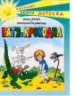

Эта история в свое время так понравилась юным читателям, что ее перевели на несколько иностранных языков и даже сняли по ней два художественных фильма. А началось все в погожее летнее утро, когда пятиклассник Митя решился доверить животных из школьного живого уголка такой легкомысленной девочке, как Катя Пастушкова. Ни он сам, ни Катя даже не подозревали, к каким последствиям это приведет.